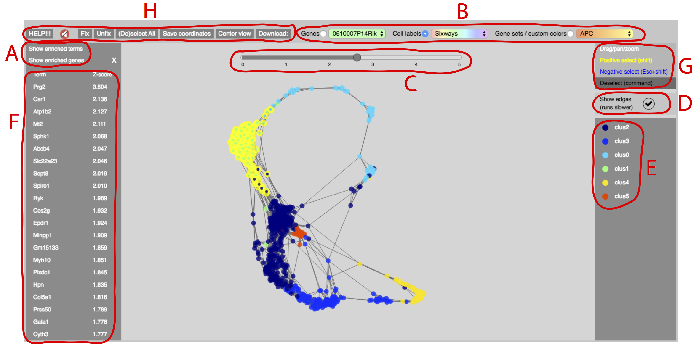

Quick start
- Click and drag nodes to move the graph.
- Drag the background to pan; mouse-scroll to zoom.
- To select and deselect cells, choose a selection mode (G) and drag a box around the cells, or use keyboard shortcuts.
- to find markers enriched in a cell Selection, click “show enriched terms/genes” (A).
- Use radio buttons (B) to switch between color modes. Within a color mode, choose a specific color track from the drop-down menu.
- Drag the colored range slider (C) to adjust color saturation point.
- Turn off “show edges” (D) to make SPRING run faster.

Menu Bar (H)
HELP!!!:
Links to this page.
Fix/Unfix:
Can be used to fix and unfix the positions of nodes. To fix nodes, select them and click “Fix”. To set nodes free, select them and click “Unfix”. SPRING plots with saved/uploaded coordinates automatically load with all nodes fixed.
(De)select All:
If no nodes are selected, this button selects all nodes. If some nodes are already selected, this button deselects all nodes.
Save coordinates:
Clicking this button saves the current node coordinates so that they are automatically reloaded when you next open the SPRING plot. To export coordinates for outside use, see “Download:” section.
Center view:
Automatically centers and rescales the SPRING plot.
Download:
- Coordinates:
Exports csv file storing the coordinates of the current view. Each line contains the index of a node (base-0 numbering) and its x- and y- coordinates.
- Selected cells:
Exports a text file that lists the index of a currently selected cell on each line (0-based numbering).
- Enriched terms:
Exports file showing terms enriched in the selected population of cells. The terms can be either genes or gene-sets/custom-coloring-tracks. When enriched terms are being viewed in the left sidebar (F), then they are exported. Otherwise, the choice of genes vs. gene-sets/custom-coloring-tracks depends on which marker type is currently coloring the cells. The exported file contains a list of selected cells on the top line (comma-delimited) followed by a blank-line, and then a list of terms and their enrichment Z-score (see “Show enriched terms” section)
- Edge list:
Exports a list of edges in the graph. Each line contains one edge with the source and target indexes separated by a comma (based-0 numbering).
- Screenshot (.png)/(.svg):
Exports an image of the current plot. The exported image will have a white background. All on-screen items such as the color-slider and enrichment sidebars are hidden in the exported image. The “.svg” option sometimes fails for very large datasets.
Coloring nodes
Nodes can be colored using three different modes, with the current mode set by radio buttons (B)
Genes: Each node is colored by normalized gene expression. Choose genes using the drop-down menu. You can jump straight to a gene in the menu by typing its name.
Gene sets / custom colors: Each line in this drop-down menu corresponds to a user-uploaded custom color track or gene set. When a gene set is selected, the color of a node reflects the sum of Z-scores of genes in the set.
Cell labels: Each line in this drop-down menu corresponds to a different labeling of cells. When you select a labeling, a sidebar (E) will appear on the right side of the screen showing the color for each label. Click a label to select the corresponding nodes.
Show enriched terms
To find marker genes, enriched within a population of cells, select the cells and click “Show enriched genes” (A). Similarly to find gene sets / custom coloring tracks enriched in a selection of cells, click “Show enriched terms" (also A). In both cases, a sidebar (F) will appear that lists the terms and their enrichment score. The enrichment score is the sum of Z-scores for the given track across all cells in the selection. Users can scroll through tracks in the sidebar. To color nodes with a track, just click it.
In addition to finding markers enriched in a population, it is also possible to directly compare two populations using negative selection. To negatively select cells, use Shift+Esc+drag or click “Negative select” in the SPRING interface (G). If cells are negatively selected, then enriched genes/terms are ranked and scored by the formula:
enrichment_score(positive selection) – enrichment_score(negative selection)